Xcode Build Settings 分析
转自：http://www.jianshu.com/p/0509b438e84e
本文主要对xcode中常见的工程配置进行介绍，仅用于记录分享，不做其他用途。
Architectures
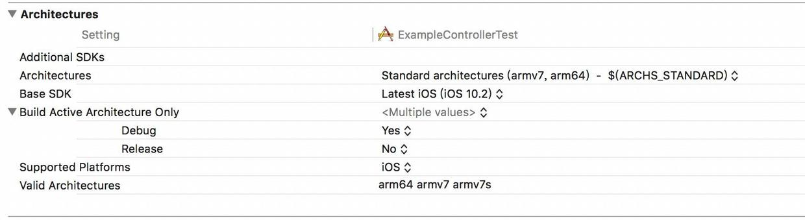
Additional SDKs
在编译的时候需要附加的SDK。
Architectures
支持的处理器架构。支持的指令集越多，就会编译出包含多个指令集代码的数据包，对应生成二进制包就越大，最终目标文件也会变大。
指令集可以参考：http://www.jianshu.com/p/3fce0bd6f045
Base SDK
App所能支持的最大iOS版本。Xcode默认会设置为能够支持的最新版本。
Build Acitve Architecture Only
如果此项为YES，则Xcode会根据当前所连接设备的版本只将相应的Architecture编译入app。否则会同时编译“Valid Architectures”中的指令集。
建议在Debug模式下设置为YES，Release模式下设置为NO，加快编译速度。
Supported Platform
app支持的平台。目前可选的有iOS、macOS、tvOS、watchOS。
Valid Architectures
限制可能被支持的指令集的范围，也就是Xcode编译出来的二进制包类型最终从这些类型产生，而编译出哪种指令集的包，将由Architectures与Valid Architectures（因此这个不能为空）的交集来确定。
知识延伸：lipo
lipo源于mac系统要制作兼容powerpc平台和intel平台的程序。
lipo 是一个在 Mac OS X 中处理通用程序（Universal Binaries）的工具。
用途一：查看二进制所支持的指令集
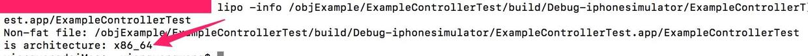
用途二：合并指令集
lipo –create Release-iphoneos/libiphone.a Debig-iphonesimulator/libiphone.a –output libiphone.a
用途三：拆分指令集
lipo SDK.a -thin armv7 -output */SDK.a
Assets
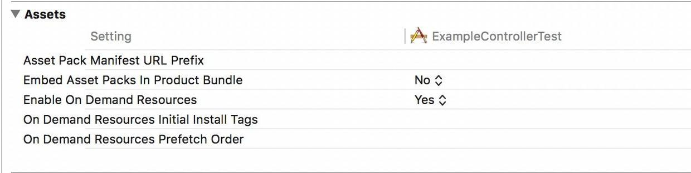
Asset Pack Manifest URL Prefix
资源包清单的下载路径URL前缀
Embed Asset Packs In Product Bundle
是否将资源包嵌入产品的bundle中
Enable On Demand Resources
是否开启按需获取资源功能
On Demand Resources Initial Install Tags
按需加载资源时的初始安装资源文件标签
On Demand Resources Prefetch Order
按需加载资源时预加载的标签顺序
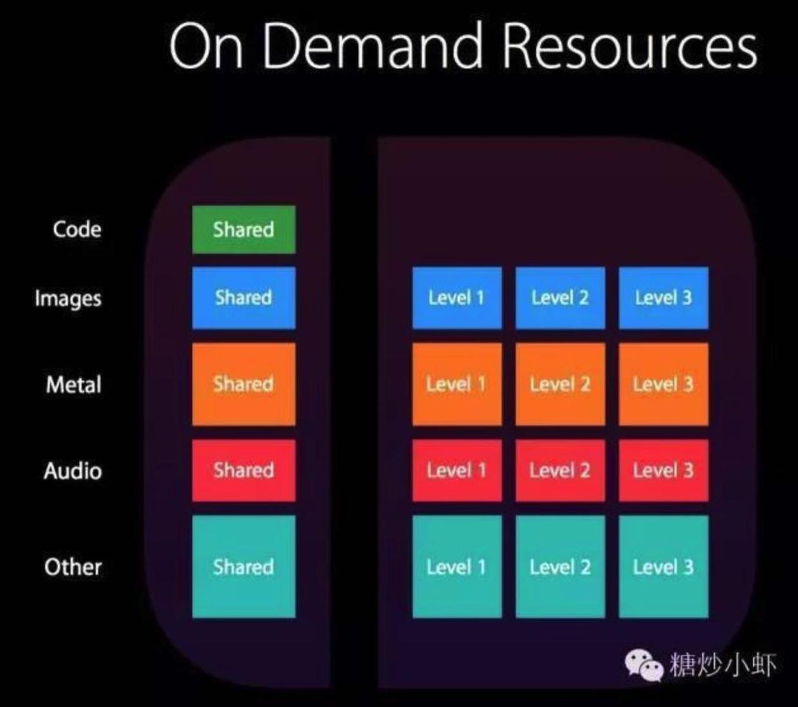
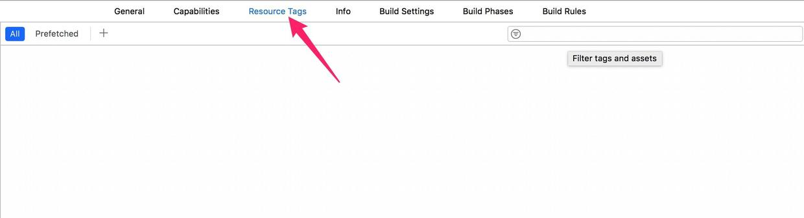
Build Locations
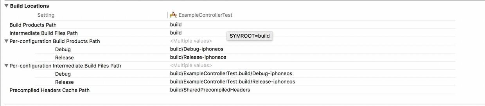
Build Products Paths
产品文件和编译中间文件的根目录。产品文件和编译时临时文件都将放在这个目录的子目录中。
Intermediate Build Files Path
编译时临时文件的存放位置。编译中间文件格式为product name+.build，如MyProduct.build。
Per-configuration Build Products Path
当前编译设置下的产品存放位置。
Per-configuration Intermediate Build Files Path
当前编译设置下编译时临时文件的存放位置。
Precompiled Headers Cache Path
预编译头文件缓存存放路径。通过这个配置，Targets可以互相共享预编译的头文件。
这个在Xcode中的设置在File->Project Setting界面进行设置，
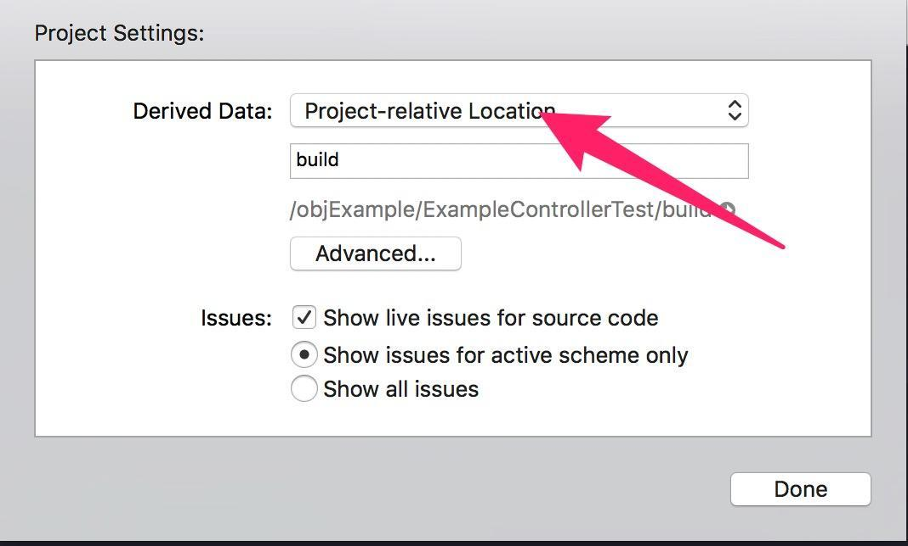
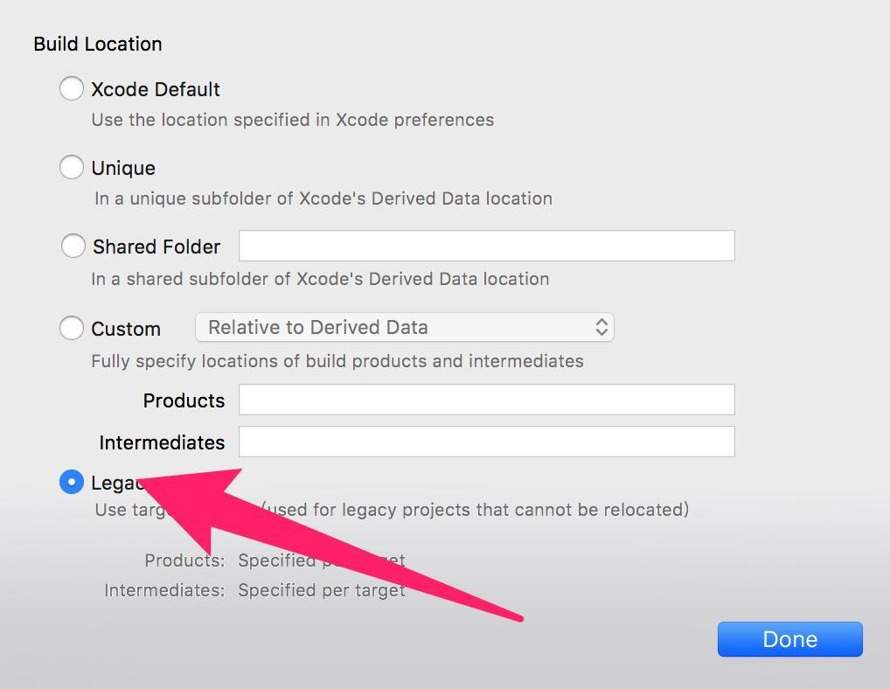
Build Options
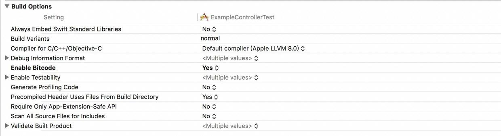
Always Embed Swift Standard Libraries
始终嵌入swift标准库。对于未使用swift代码的情况可以设置为NO。
Build Variants
此项可以设定生成产品的变种。您可以创建额外的产品变种作为特殊用途。例如，您可以使用编译配置文件的名称来创建一个高度定制的二进制文件。
Build Variants的值有三个：
normal-用于生成普通的二进制文件；
profile-用于可以生成配置信息的二进制文件；
debug-用于生成带有debug标志、额外断言和诊断代码的二进制文件。
Compiler For C/C++/Objective-C
选择使用的编译器。目前Xcode8.2默认使用APPLE LLVM 8.0版本的编译器。
Debug Information Format
记录debug信息的文件格式。共有DWARF with dSYM File和DWARF两种可以选择。建议选择DWARF with dSYM File。DWARF是较老的文件格式，会在编译时将debug信息写在执行文件中。
Enable BitCode
Bitcode is an intermediate representation of a compiled program. Apps you upload to iTunes Connect that contain bitcode will be compiled and linked on the App Store. Including bitcode will allow Apple to re-optimize your app binary in the future without the need to submit a new version of your app to the store.
Bitcode. When you archive for submission to the App Store, Xcode will compile your app into an intermediate representation. The App Store will then compile the bitcode down into the 64 or 32 bit executables as necessary.
说的是bitcode是被编译程序的一种中间形式的代码。包含bitcode配置的程序将会在App store上被编译和链接。bitcode允许苹果在后期重新优化我们程序的二进制文件，而不需要我们重新提交一个新的版本到App store上。
当我们提交程序到App store上时，Xcode会将程序编译为一个中间表现形式(bitcode)。然后App store会再将这个botcode编译为可执行的64位或32位程序。
不过，我们现在需要考虑的是三个平台：iOS，Mac OS，watchOS。
对应iOS，bitcode是可选的。
对于watchOS，bitcode是必须的。
Mac OS不支持bitcode。
Enable Testability
是否支持测试。默认选NO；
Generate Profiling Code
是否生成配置代码。默认选择NO。
Precompiled Header Uses Files From Build Directory
预编译build路径中的头文件。由于编译过程比较耗时，且两次编译之间未必会改动所有文件。因此将不会改动的常用文件保留成预编译文件将大大减少编译时的时间。建议这一项选择YES。
Require Only App-Extension-Safe API
如果我们要想应用扩展使用内嵌框架，那么首先要配置一下。将target的Require Only App-Extension-Safe API选项设置为Yes。如果你不这样设置，那么Xcode会向你提示警告：linking against dylib not safe for use in application extensions。
Scan All Source Files for Includes
扫描include文件所包含的所有源文件。
Validate Built Product
这个选项决定了是否在编译的时候进行验证。验证的内容和app store的审查内容一致。默认选项是debug时不验证，release时验证。
Deployment
Headers
Kernel Module
Linking
Search Paths
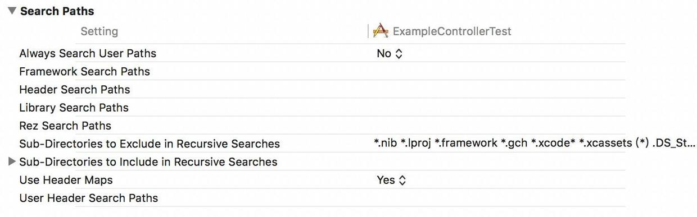
Always Search User Path
是否搜索用户指定的路径，默认是NO；
Framework Search Paths
工程引用的framework搜索路径
Header Search Paths
工程中引用的头文件搜索路径
Library Search Paths
library搜索路径，比如静态.a库
Rez Search Paths
This is a list of paths to search for files included by CarbonResource Manager resources and compiled with the Rez tool.
Sub-Directories to Exclude in Recursive Searches
指定哪些类型的子目录在递归查找时忽略
Sub-Directories to include in Recursive Searches
指定哪些类型的子目录在递归查找时包含
Use Header Maps
User Header Search Paths
设置头文件搜索路径，这个只有当Always Search User Path开启后才有效。
signing
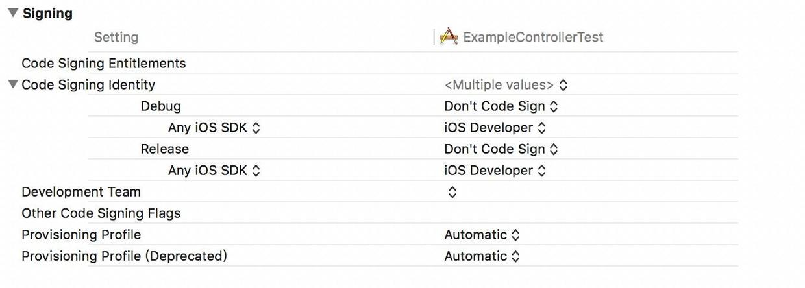
Code Signing Entitlements
授权机制。在Xcode的capabilities选项卡下选择一些选项后，Xcode就会生成这样一段XML，Xcode会自动生成一个entitlements文件，然后再需要的时候往里面添加条目。当构建整个应用时，这个文件也会提及给codesign作为应用所需要拥有哪些授权的参考。这些授权信息必须都在开发者中心的AppID中启用，并且包含在配置文件中。
Code Signing Identity
配置证书
Development Team
开发者所在的群组
Other Code Signing Flags
常见的配置为--deep。用法不详。
Provisioning Profile
配置描述文件。
User-Defined
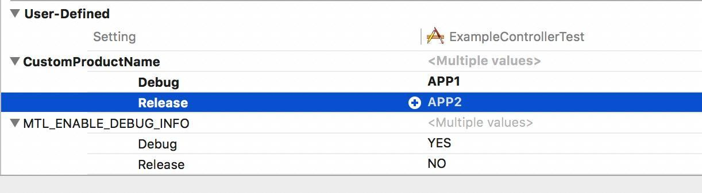
这里用户可以在debug、release或者自己定义的编译模式下设置不同的变量，可以达到一套代码同时支持多个不同版本的目的。比如可以编译出叫APP1和APP2两个名字不一样的APP。
Packaging
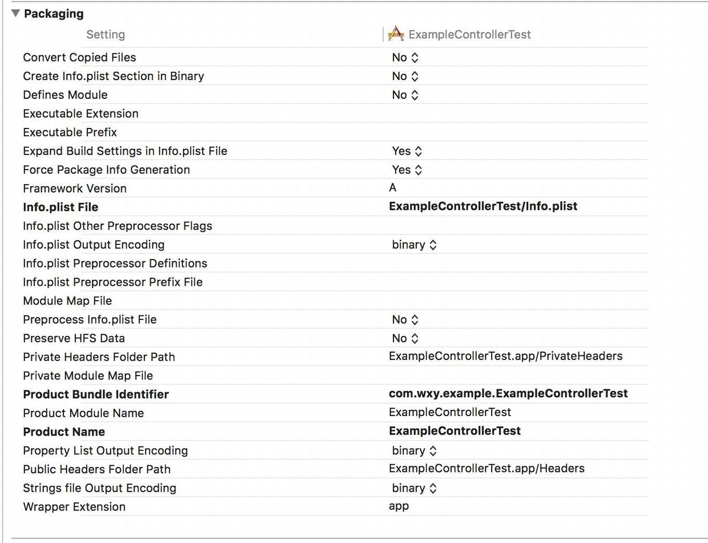
Defines Module
是否定义模块。默认app类的工程为NO，framwork工程默认为YES。
Expand Build Setting in Info.plist File
告诉编译器是否处理info.plist。默认是YES。这是一个很大的特点，因为它避免了有根据您的构建设置和配置不同的Info.plist中，避免您在多个地方修改设置。 但是如果你真的不想要它，只需在项目或目标的构建设置中关闭此设置。
Info.plist File
创建工程后默认会创建一个info.plist文件。也可以根据需要进行主动创建。
Private Headers Folder Path
私有头文件的存放位置。
Product Bundle Identifier
产品bundle的标识
Product Module Name
产品模块名称
Product Name
产品名称
Public Headers Folder Path
公共头文件路径
Wrapper Extension
打包的扩展名，默认app。
Preprocessing
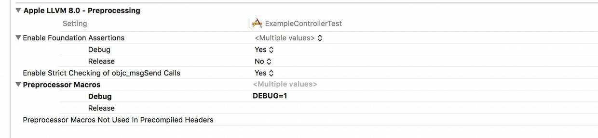
Copyright © 2017 通过 MWeb制作 沪ICP备15015428号-1